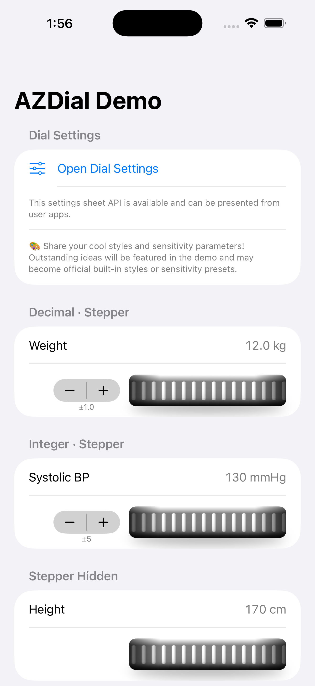

AZDial
SwiftUI scroll-wheel dial control (iOS / macOS)
A SwiftUI dial control for iOS and macOS. A design that stands apart from flat design, committed to realistic three-dimensional expression. Whether it will merge with or rebel against glass design — the direction follows intuition. Now that it's public, I'm eager to incorporate your feedback.
Originally created as an Objective-C component in 2012. Fully rewritten in SwiftUI in 2025. Available via Swift Package Manager.
Demo



Features
Requirements
Installation
Xcode
Go to File → Add Package Dependencies and enter:
https://github.com/SumPositive/AZDial
Package.swift
dependencies: [
.package(url: "https://github.com/SumPositive/AZDial", from: "3.0.0")
]
Usage
Basic example
import AZDial
struct ContentView: View {
@State private var weight = 600 // 60.0 kg (stored ×10)
var body: some View {
AZDialView(
value: $weight,
min: 300, // 30.0 kg
max: 2000, // 200.0 kg
step: 1,
stepperStep: 10,
decimals: 1,
style: .shape,
dialWidth: 220
)
}
}
Parameters
| Parameter | Type | Default | Description |
|---|---|---|---|
value | Binding<Int> | — | Current value |
min | Int | — | Minimum value |
max | Int | — | Maximum value |
step | Int | — | Value increment per drag step |
stepperStep | Int | — | Stepper button increment (0 = hidden) |
decimals | Int | 0 | Decimal places on stepper label |
style | DialStyle | .shape | Visual style |
dialWidth | CGFloat | 220 | Dial width in points (clamped to 80–220) |
tuning | AZDialInteractionTuning? | nil (= .default) | Interaction tuning; overrides pitch when set |
pitch | CGFloat | 20 | Shorthand for tuning.pitch when tuning is nil |
DialStyle
Built-in styles
| Style | Description |
|---|---|
.regacy | Classic AZDial knurling — reproduction of the original Objective-C design |
.midnight | Dark gunmetal with high-contrast silver highlights |
.brass | Warm brass with champagne gold highlights |
.ocean | Blue anodized aluminum with ice-blue highlights |
.shape | Shape-based knurling tile (default) |
.varnia | Narrow machined knurling |
.chrome | Polished chrome with high contrast |
.hairline | Ultra-fine hairline engraving |
.rubber | Wide matte rubber grip |
Custom image tile
Supply your own PDF or PNG from Assets.xcassets:
AZDialView(
value: $value,
min: 0, max: 100,
step: 1, stepperStep: 10,
style: .tile(
light: "MyDialTile",
dark: "MyDialTile_Dark", // optional
tileWidth: 20 // must match image width in points
)
)
For assets in your own Swift Package, pass bundle: .module.
Persistence
Use DialStyle.id (a String) to store the selected style in UserDefaults or iCloud KVS, and restore it with DialStyle.builtin(id:).
// Save UserDefaults.standard.set(style.id, forKey: "dialStyle") // Restore let id = UserDefaults.standard.string(forKey: "dialStyle") ?? "" let style = DialStyle.builtin(id: id) ?? .shape
Interaction Tuning
Pass an AZDialInteractionTuning to control all drag and inertia parameters.
Basic usage
@State private var tuning = AZDialInteractionTuning.default
AZDialView(value: $value, min: 0, max: 100, step: 1, stepperStep: 10,
tuning: tuning)
Parameters
| Property | Default | Description |
|---|---|---|
pitch | 20 | Points of horizontal drag per value step |
velocitySmoothing | 0.4 | Weight of the newest velocity sample (0–1) |
inertiaStartVelocity | 200 | Minimum velocity (pt/s) to start inertia after lift |
fastSwipeVelocity | 1500 | Velocity boundary between slow and fast multiplier |
slowSwipeMultiplier | 10 | Steps per pitch during slow inertia |
fastSwipeMultiplier | 100 | Steps per pitch during fast inertia |
inertiaDecay | 0.94 | Per-frame velocity multiplier during coast (0.80–0.99) |
inertiaStopVelocity | 15 | Velocity at which inertia stops |
Built-in presets
| Preset | pitch | Multipliers (slow/fast) | Feel |
|---|---|---|---|
.fine | 36 pt | ×3 / ×20 | Maximum precision, minimal inertia |
.mild | 28 pt | ×6 / ×50 | Controlled |
.standard | 20 pt | ×10 / ×100 | Default |
.light | 14 pt | ×15 / ×130 | Nimble |
.fast | 9 pt | ×20 / ×180 | High-speed entry |
Persistence
AZDialInteractionTuning is Codable — round-trip it through UserDefaults or iCloud KVS:
// Save
if let data = try? JSONEncoder().encode(tuning) {
UserDefaults.standard.set(data, forKey: "dialTuning")
}
// Restore
if let data = UserDefaults.standard.data(forKey: "dialTuning"),
let saved = try? JSONDecoder().decode(AZDialInteractionTuning.self, from: data) {
tuning = saved
}
AZDialSettingsView
A ready-made settings sheet for choosing dial style and interaction sensitivity. Present it as a sheet and persist the bindings however your app prefers.
Basic usage
@State private var style = DialStyle.shape
@State private var tuning = AZDialInteractionTuning.default
@State private var showSettings = false
Button("Dial Settings") { showSettings = true }
.sheet(isPresented: $showSettings) {
AZDialSettingsView(tuning: $tuning, style: $style)
}
Customization
let config = AZDialSettingsConfiguration(
title: "Input Wheel",
styleCandidates: [.shape, .chrome, .rubber],
testRange: 0...999
)
AZDialSettingsView(tuning: $tuning, style: $style, configuration: config)
AZDialSurface (surface only)
Use AZDialSurface standalone when you need only the scrolling ridge background — for example, in a settings UI preview:
AZDialSurface(offset: 0, tickGap: 10, style: .brass)
.frame(height: 44)
.clipShape(RoundedRectangle(cornerRadius: 8))
Release History
| Version | Notes |
|---|---|
| 1.x | Initial release (SPM port of the Objective-C component) |
| 2.x | Full rewrite in SwiftUI. Canvas-based built-in styles added |
| 3.0.4 | 2026/4/10 Renamed AZDialBack to AZDialSurface. Added English localization to AZDialDemo. Published on Swift Package Index. |
| 3.0.5 | 2026/4/16 Added .shape built-in style. Changed default style to .shape |
| 3.1.0 | 2026/4/17 Added pitch parameter for configurable step distance. Improved step-snap feel. Added velocity-based ×10 / ×100 step multipliers on flick inertia. |
| 3.2.0 | 2026/4/19 Added AZDialInteractionTuning for drag and inertia tuning. Flick inertia with velocity-based step multipliers. Added AZDialSettingsView settings sheet. Step snapping improved — no visual jump on finger lift. Navigation back-swipe blocking on iOS. |